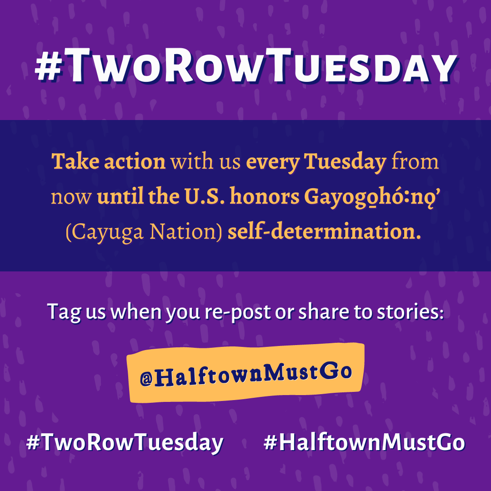

Action: DC Trip for Gayogo̱hó:nǫ⁷ Self-Determination

Sunday May 15 and Monday May 16, we'll be heading from across all Haudenosaunee lands to Washington, DC. We're planning this event in dialogue with Gayogo̱hó:nǫ⁷ titleholders and citizens, some of whom have expressed interest in attending and organizing speakers. There will be a dynamic gathering near Department of Interior offices late morning on Monday, and we're hoping to also secure meetings with New York senators Schumer and Gillibrand's offices, all to help the US government understand that in the name of Indigenous sovereignty, Halftown Must Go.
Interested in joining us or providing helpful resources? Fill in a quick interest form to let us know! You can also support by donating or by snagging a very cool "This Is All Native Land" t-shirt.
Action: Postcard Flurry
On May 7, many of us gathered in Ithaca's Stewart Park to write postcards urging the DOI to deny Halftown's land-into-trust application and push for the President to meet with the Council of Chiefs. It's not too late to add one more! You can write your own message or start with the script below.
Asst. Sec. Bryan Newland
Department of the Interior
1849 C Street, N.W.
Washington, DC, 20240
Dear Asst. Sec. Newland,
I am a US resident/citizen writing out of concern about the way we as the US are violating Gayogo̱hó:nǫ⁷ self-determination, violating the United Nations Declaration on the Rights of Indigenous Peoples, and enabling human rights abuses against my Gayogo̱hó:nǫ⁷ neighbors through your continuing legitimization of Clint Halftown as a representative of the Cayuga Nation. I ask that you prompt the President to meet with the Council of Chiefs ASAP (since they've expressed complaint as per the 1794 Treaty of Canandaigua). I want our nation-to-nation relationship to respect Haudenosaunee governance and heed the removal of Halftown. In the meantime, please deny the pending land-into-trust application.
Thank you,
[Your name], [location/ZIP code] (Gayogo̱hó:nǫ⁷ land)
Ithaca City Letter
Our efforts in Ithaca have paid off! The Common Council unanimously signed a letter in support of the traditional Gayogo̱hó:nǫ⁷ and sent it to the Secretary of the Interior and other U.S. officials. Ithaca joins the Town of Dryden, Town of Enfield, Seneca County, and Cornell University Student Assembly in sending official letters or passing resolutions on this issue.
Read the letters:
Action: Rebuking Halftown's 60% Claim
Clint Halftown is fond of claiming that 60% of Cayuga Nation citizens support him. You can learn about why this claim is misleading and help dispel it by sharing that information with the DOI, BIA, and journalistic publications. Here's some contact information:
Bryan Newland
Department of the Interior
1849 C Street, N.W.
Washington, DC, 20240
Kimberly Bouchard
Eastern Regional Office
Bureau of Indian Affairs
545 Marriott Drive Suite 700
Nashville, TN, 37214
Finger Lakes Times
315-789-3333
mcutillo@fltimes.com (Michael Cutillo, Publisher / Executive Editor)
Auburn Pub (aka The Citizen)
315-253-5311
jeremy.boyer@lee.net (Jeremy Boyer, Executive Editor)
Finger Lakes Daily News
607-243-7158
news@flradiogroup.com (attn: Greg Cotterill)
You can also ask journalistic publications to acknowledge the Haudenosaunee Confederacy's official website (which lists the Nation's current Clan Mothers and Chiefs) any time their reporting discusses Halftown's supposed "leadership," and to stop using phrases like "anti-Halftown faction," as the Council of Chiefs is not a "faction," nor are the Clan Mothers, nor are the Nation citizens who acknowledge their role and authority within the Great Law of Peace.
Any time you see or hear Halftown's 60% narrative, comment and share the full context! Point people to the Haudenosaunee Confederacy's website or right here to our own to get informed and review relevant documents for themselves.
#TwoRowTuesday

Every week on Tuesday, our Instagram page posts a quick action that friends and allies can take to help spread the word and further the effort to end US recognition of Halftown.
Action: BIA Petition
One way to join us in support of the traditional Gayogo̱hó:nǫ⁷ leadership is to sign the petition to rescind BIA recognition of Halftown and recognize the Gayogo̱hó:nǫ⁷ Council of Chiefs instead.